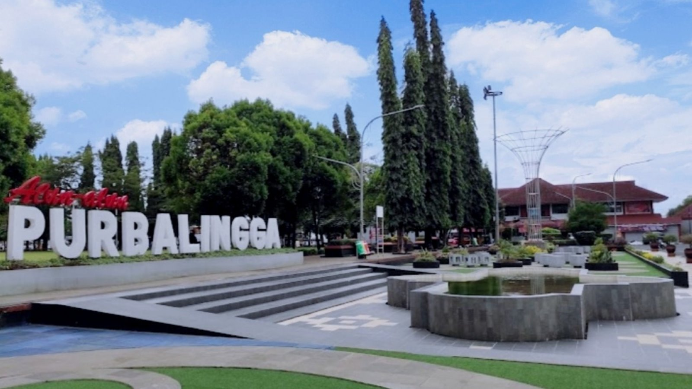

About My Hometown
Purbalingga, a city located in Central Java, exudes natural and cultural charm that captivates the hearts of anyone who visits it. Situated at the foot of Mount Slamet, this city offers a calm atmosphere with refreshing cool air. Surrounded by green hills and vast expanses of rice fields, Purbalingga seems to be an oasis for those seeking peace from the hustle and bustle of city life.
The life of the Purbalingga community reflects the harmony between tradition and progress. Its friendly and warm residents create a comfortable atmosphere, where visitors always feel welcomed like family. The culture of mutual cooperation and togetherness is still very strong here, reflecting the noble values that have been passed down from generation to generation.
Purbalingga also has a long history that is reflected in various cultural heritages and local wisdom that are still preserved. Handicrafts, such as the production of false eyelashes that are famous internationally, are one proof of the creativity of its people. Behind the hospitality and simple life, Purbalingga holds a great spirit to develop and innovate.
As one of the areas in Central Java that still maintains its natural beauty, Purbalingga offers stunning natural scenery in every corner. Clear rivers, fertile rice fields, and majestic mountains are the backdrop to the daily lives of the city's residents. The combination of natural beauty and quiet life makes Purbalingga an ideal place for anyone who wants to escape for a moment from the hustle and bustle of the modern world.
Purbalingga is a simple yet charming city, a place where life runs at a peaceful rhythm, full of togetherness, and always offers a sense of comfort to anyone who comes.